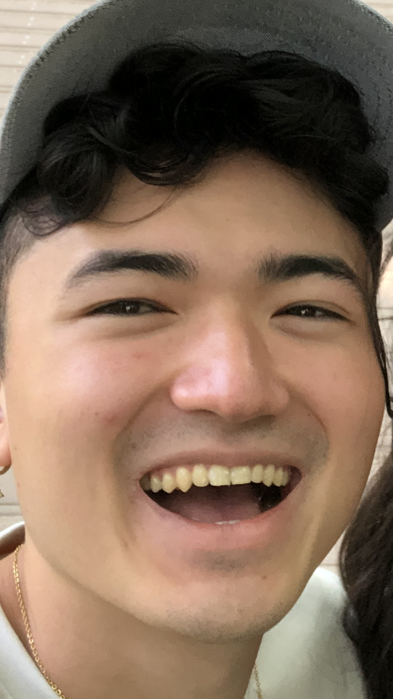

Joe Hermann Doerr
Rutgers University NB, joehdoerr@gmail.com , jhd79@rutgers.edu
Reinforcement Learning, Robotics, Deep learning
Links:
Google scholar: https://scholar.google.com/citations?user=1OeZRecAAAAJ&hl=en&oi=ao
First publication: https://opg.optica.org/abstract.cfm?uri=DH-2022-M6A.2
Longer version of publication: https://arxiv.org/abs/2304.06042
Generalization Partial Review: https://joedoerr.bitbucket.io/
Personal Projects: https://bitbucket.org/JoeDoerr/researchdl/src/master/
SAC/DDPG implementation: https://bitbucket.org/JoeDoerr/soft-actor-critic-modifiable/src/main
Interests:
I am interested in creating intelligent robots that can perform well in real world scenarios. To this end, my focus is on improving locomotion, navigation, and manipulation capabilities for intelligent robots within environments characterized by stochasticity, noise, and high complexity. RL is especially captivating due to not only the potential it has to autonomously find solutions in these environments, but the controllability over the solutions. I am specifically interested in the manipulation of RL design to find behaviors that are robust to observational noise or environmental stochasticity.
Additionally, I am interested in exploring the synergy between DL and RL, particularly in terms of generalization across varying task attributes, cardinally different tasks, and simulation to real life. Moreover, I am interested in targeted information capture within DL models both facilitated by RL and to facilitate RL. In the interplay between RL and robotic manipulation and locomotion, I am interested in finding solutions that not only use RL, but also properly leverage classical robotic control methods.
Work Experience:
Rutgers University, PRACSYS, Robotics Lab
October 2023 - Present (~2 months)
Research Assistant
In person I attend weekly discussions about project updates and future directions with professors. I also attend weekly meetings where PhD students present papers of interest and hold a discussion.
Supervisor:
Prof. Kostas Bekris
Notable work:
I am currently working with a PhD student on low tolerance peg insertion.
Created reinforcement learning (RL) task environments in IsaacGym for low tolerance peg insertion.
Assisted in developing methods for improving robustness of peg insertion policy to observation noise.
University of Central Florida, CREOL, Optical Imaging System Lab
June 2021 - Jan 2023 (~19 months)
Research Intern and Consultant
I worked as a remote research consultant for 15 hours a week during the semester and 40 hours a week during the summer. I went to work in person in Florida as a research intern during my second summer working there.
Supervisors:
Prof. Shuo (Sean) Pang, Prof. Guifang Li, Dr. Zheyuan Zhu
Publication date and title:
Shorter version: Multiplane light conversion design with physical neural network, 8/1/2022
Longer version: A physical neural network training approach toward multi-plane light conversion design (process of resubmission currently), 4/6/2023
Notable work done:
Specific methodology interests:
In approximate order of familiarity/interest
Specific problem interests:
I have yet to develop a comprehensive understanding of the paradigm of the field for any of these subjects. They are interests I have been exploring from reading a few papers.